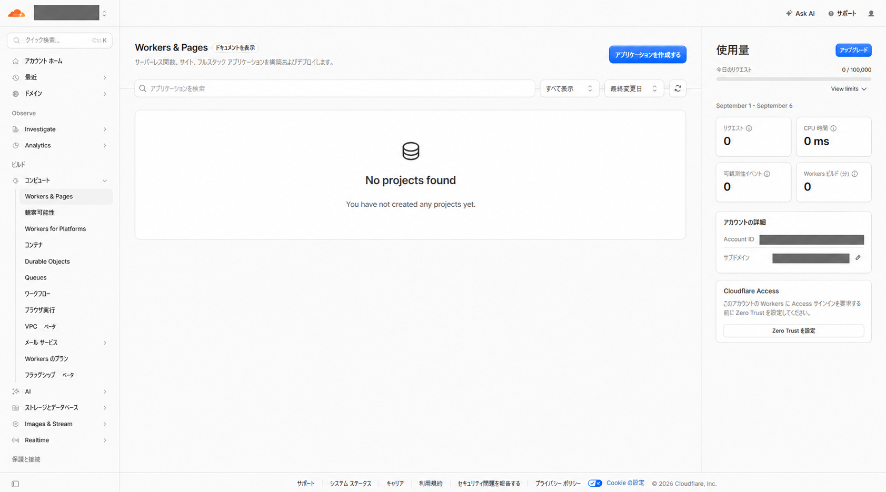
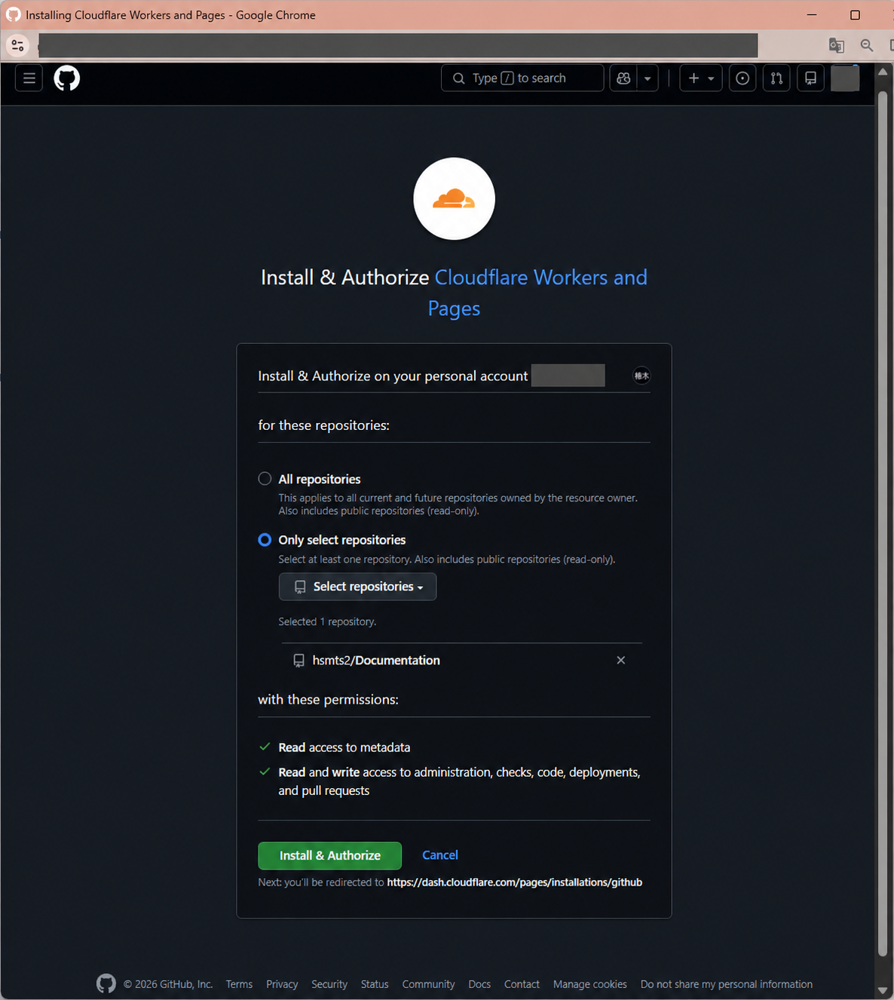
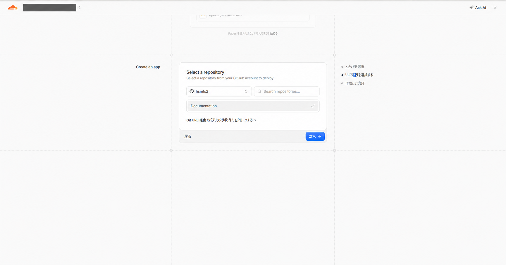
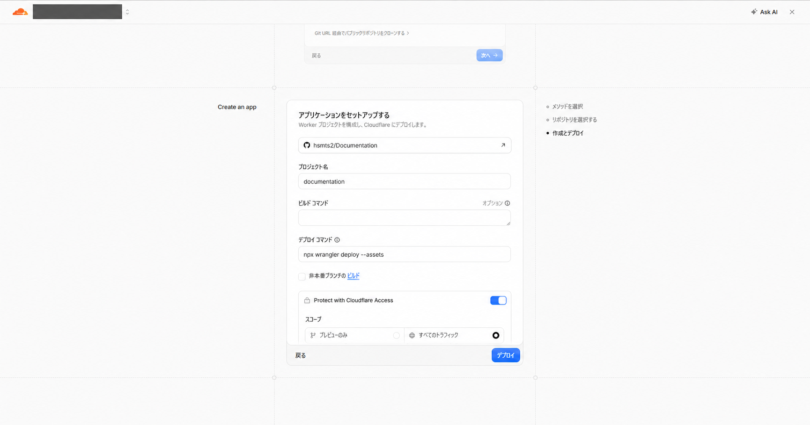
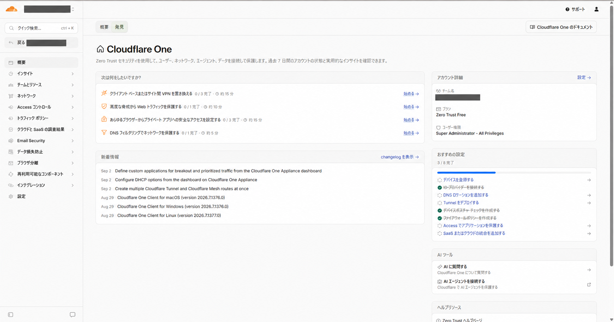
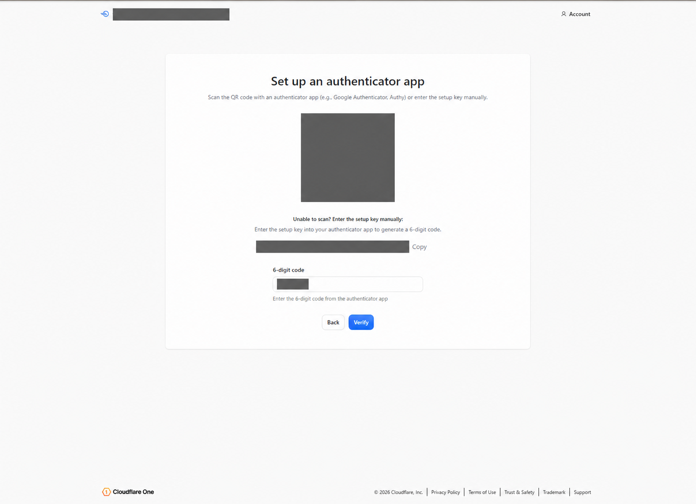
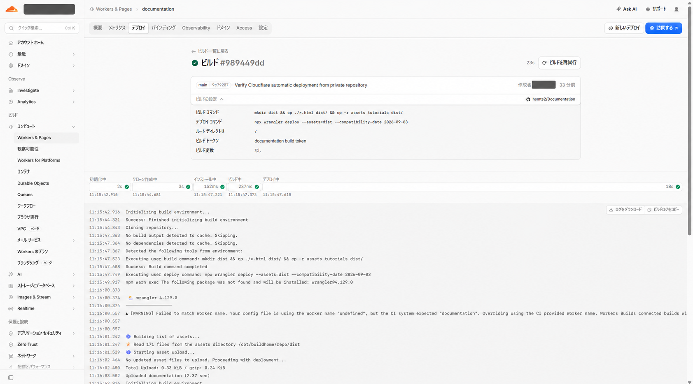
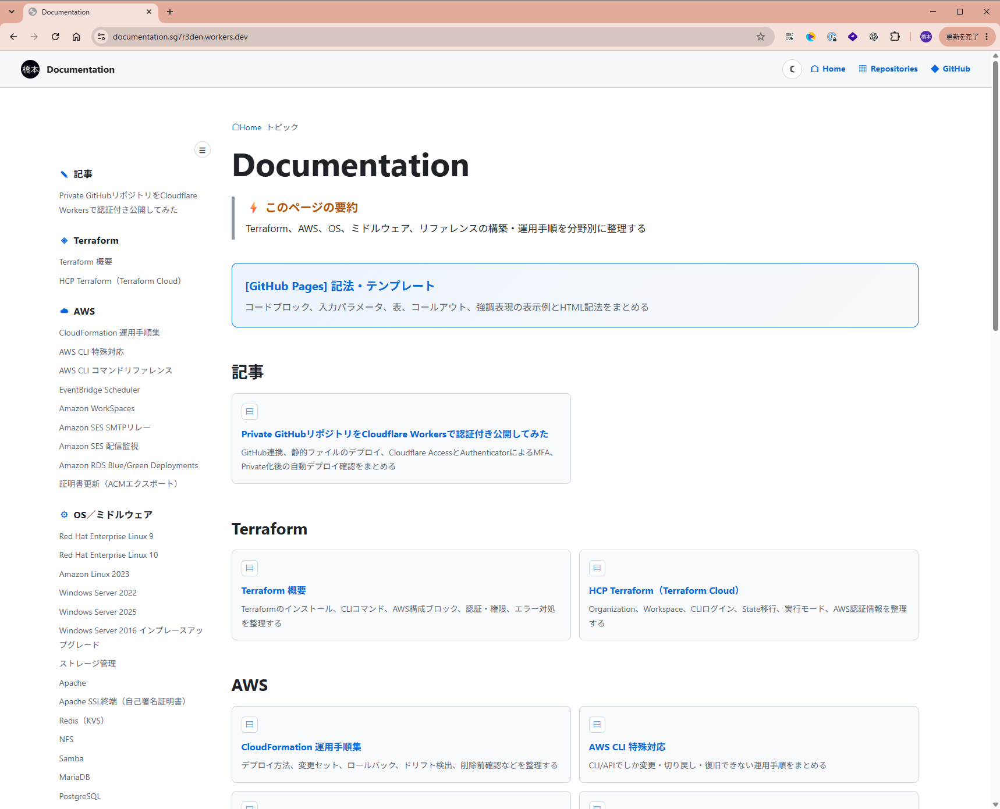

Private GitHubリポジトリをCloudflare Workersで認証付き公開してみた
GitHubで管理する静的ドキュメントをCloudflare Workersへ自動デプロイし、Cloudflare AccessとAuthenticatorアプリのMFAで閲覧を保護した手順をまとめる
リポジトリ連携、公開ファイルの分離、Access設定、Private化、自動デプロイと最終URLの確認までを実際の構成に沿って整理する
今回実現した構成
ソースはPrivateのGitHubリポジトリで管理し、mainへのPushをCloudflare Workers Buildsが検知して静的ファイルだけをWorkersへデプロイする
閲覧時はCloudflare Accessで本人確認を行い、AuthenticatorアプリのTOTPを追加認証として必須にする
| 対象 | 今回の設定 | 目的 |
|---|---|---|
| GitHubリポジトリ | Private | ソースコードと画像を一般公開しない |
| デプロイ元ブランチ | main | 確定した変更だけを自動公開する |
| ホスティング | Cloudflare Workers Static Assets | 静的HTML、CSS、JavaScript、画像を配信する |
| 閲覧制御 | Cloudflare Access | 認証を通過した利用者だけに公開する |
| 多要素認証 | AuthenticatorアプリのTOTP | メールを受信できない端末でも6桁コードで本人確認する |
GitHub Pagesは、利用プランや構成によってPrivateリポジトリから公開できても、サイト自体がインターネットへ公開される。ソースの非公開化だけで閲覧制御まで完了したと判断せず、Cloudflare Accessの認証を別に設定する
1. GitHubリポジトリをCloudflareへ連携
Cloudflare Workers and PagesのGitHub Appをインストールし、連携対象を必要なリポジトリだけへ限定するAll repositoriesではなくOnly select repositoriesを選択し、Documentationだけを指定する
- Cloudflareダッシュボードで
Workers & Pages＞アプリケーションを作成するを選択 - GitHubアカウントを選択し、Cloudflare Workers and PagesのGitHub Appを開く
Only select repositoriesを選択し、公開元のリポジトリだけを追加- 表示される権限と対象リポジトリを確認し、
Install & Authorizeを選択


2. Workersアプリケーションを作成
連携したGitHubアカウントからDocumentationを選択し、Workersアプリケーションを作成する
プロジェクト名はdocumentation、Production branchはmain、Root directoryは/とする
- Cloudflareダッシュボードで
Workers & Pages＞アプリケーションを作成するを開く リポジトリを選択するでDocumentationを選択- プロジェクト名、Production branch、ビルドコマンド、デプロイコマンドを入力
- 非本番ブランチからの自動デプロイを使用しない場合は、Non-production branch buildsを無効化


3. 公開するファイルだけをデプロイ
リポジトリ直下をそのまま公開対象にせず、ビルド時にdistを作成してHTML、CSS、JavaScript、画像だけをコピーする
この構成により、.git、README.md、CONTRIBUTING.md、検査スクリプトをWorkersへアップロードしない
| 設定項目 | 設定値 |
|---|---|
| Build command | mkdir dist && cp ./*.html dist/ && cp -r assets tutorials dist/ |
| Deploy command | npx wrangler deploy --assets=dist --compatibility-date 2026-09-03 |
| Root directory | / |
| Production branch | main |
| Non-production branch builds | OFF |
Build commandへ次の内容を設定
mkdir dist && cp ./*.html dist/ && cp -r assets tutorials dist/Deploy commandへ次の内容を設定
npx wrangler deploy --assets=dist --compatibility-date 2026-09-03--assets=.は指定しないリポジトリ直下をStatic Assetsとして指定すると、公開を意図していない管理ファイルまでアップロード対象になる。先に公開専用ディレクトリを作成し、--assets=distのように対象を限定する
出典：Cloudflare Workers Static Assets
4. Cloudflare Accessでサイトを保護
WorkersアプリケーションのAccessから保護を有効化し、Production URLとPreview URLを認証対象にする
Zero Trustの利用プランはZero Trust Freeを選択し、組織名とApp Launcherを作成する
Workers & Pages＞documentation＞Accessを開くProtect with Cloudflare Accessを有効化- 保護範囲でProduction URLとPreview URLを選択
- Cloudflare Oneの初期設定を開き、
Zero Trust Freeを選択 - Access applicationのAllowポリシーへCloudflare account membersを指定

5. AuthenticatorアプリのMFAを必須化
Cloudflare AccessのIndependent MFAを有効化し、許可する方式をAuthenticator applicationだけに限定する
サイト用アプリケーションのMFAをCustom、セッション時間を24 hoursとして保存する
- Cloudflare Oneで
設定＞認証＞MFAを開く - Independent MFAで
Authenticator applicationを許可 - App Launcherの
Account＞MFA devices＞Add an MFA deviceを開く - AuthenticatorアプリでQRコードを読み取り、表示された6桁コードで登録
- 対象Access applicationのMFAを
Customへ変更し、Authenticator applicationだけを必須化

QRコードとセットアップキーはTOTPの共有秘密であり、第三者が取得すると同じワンタイムコードを生成できる。登録画面を掲載する場合は、QRコード、セットアップキー、入力した6桁コードを復元できない不透明な図形で完全にマスクする
出典：Cloudflare Access Independent MFA
6. GitHubリポジトリをPrivateへ変更
Cloudflareからの初回デプロイとAccess認証を確認した後、GitHubリポジトリをPrivateへ変更する
先にGitHub Appの対象へリポジトリを追加しておくことで、Private化後もWorkers Buildsがソースを取得できる状態を維持する
- GitHubの対象リポジトリで
Settings＞Generalを開く Danger Zone＞Change repository visibilityを選択Make privateを選択し、対象リポジトリ名を確認して確定- ログアウト状態でGitHubのリポジトリURLを開き、ソースを閲覧できないことを確認
個人アカウントのGitHub Freeで公開中のPagesサイトは、リポジトリをPrivateへ変更すると自動的に非公開化される。今回は公開先をCloudflare Workersへ切り替え、旧GitHub Pages URLが表示されないことも確認する
7. Private化後の自動デプロイを確認
mainへ変更をPushし、Workers BuildsがPrivateリポジトリをCloneしてBuild commandとDeploy commandを順に実行できることを確認する
今回の検証では171ファイルを読み込み、23秒でデプロイが完了した

| 確認対象 | 確認結果 |
|---|---|
| GitHubリポジトリ | Private化後、未認証アクセスは404 |
| 旧GitHub Pages URL | 未公開となり404 |
| Workers URL | 未認証アクセスはCloudflare Accessへ302リダイレクト |
| Access認証 | Cloudflareアカウント認証とAuthenticator MFAの通過後にDocumentationを表示 |
| Private化後のPush | Workers Buildsが自動実行され、正常にデプロイ |
最終的な確認URLは次のとおり
https://documentation.hsmts2.workers.dev/
以下の画像は旧URLで取得した当時の確認画面
